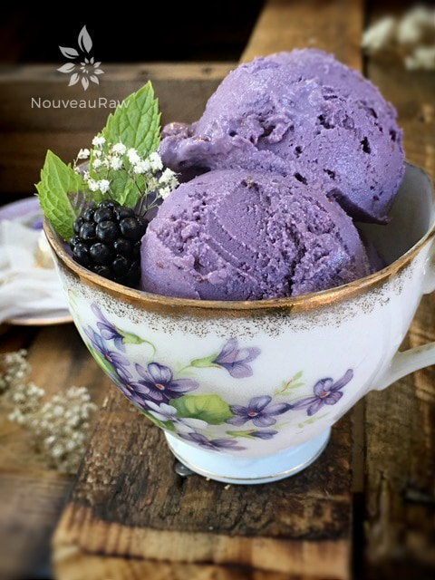
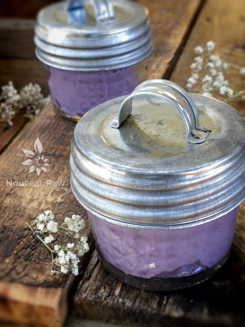

Blackberry Honey Ice Cream

~ raw, dairy-free, gluten-free ~
Pure eye-rolling amazement. As if Mother Nature herself reached down and handed you a blackberry and said, “Here, take these blackberries, they will make fantastic ice cream.”
Plump, deep purple (almost black), with a sweetness that is counterbalanced perfectly with a slight tang. Now, that’s a blackberry.
And there is something very special about fresh ripe blackberries. Maybe it’s because they weren’t a common thing to me in my childhood years. Raspberries, yes. Strawberries, yes… but never blackberries.
I know that they can be a challenge to find depending on where you live. If this is the case for you, check out the frozen food section in your local grocery store. I often find organic frozen blackberries, and when I do, I stock up.
Even if there are fresh non-organic ones in the store, I will choose organic frozen ones. Berries are on the Dirty Dozen list, meaning that they absorb a lot of pesticides.
We have an overabundance of fresh organic blackberries on our property, but they are thorned. But that doesn’t stop me. I have learned to wear a pair of gardening gloves that have a rubber lining on the underside of the hand. Now I can reach into a bush with no fear.
That’s not to say that those prickly vines haven’t done their best to grab hold of me and suck me in… nope, it just takes a little patience, wise navigation, and love for blackberries. Besides their sweet, tangy flavor blackberries have one of the highest antioxidant levels to be found in fruit. They are also rich in Vitamin C and fiber, which have been shown to help reduce the risks of certain types of cancers. Not to mention that they are low in calories, carbohydrates, and have no fat. So eat up and enjoy! I hope you enjoy this recipe. Many blessings.
Yields 6 cups batter
Preparation:
- Place the cashews in a glass bowl, along with 4 cups of water.
- Soak for at least 2 hours.
- The soaking process will help reduce phytic acid, which will aid in digestion.
- The soaking also softens the cashews, so they blend nice and creamy.
- After the cashews are through soaking, drain and rinse.
- In a high-powered blender add the cashews, blackberries, almond milk, honey, lemon juice, and stevia. Blend until creamy.
- Due to the volume and the creamy texture that we are going after, it is important to use a high-powered blender. It could be too taxing on a lower-end model.
- Blend until the filling is creamy smooth. You shouldn’t detect any grit. If you do, keep blending.
- This process can take 2-4 minutes, depending on the strength of the blender. Keep your hand cupped around the base of the blender carafe to feel for warmth. If the batter is getting too warm. Stop the machine and let it cool. Then proceed once cooled.
- You can use a different liquid sweetener if you are not comfortable with raw honey. Just be aware of the different flavors and colors that the sweetener might impact in the ice cream.
- Place the ice cream batter in the ice cream machine and follow the manufacturer directions or see below for more ideas.
- After the ice cream machine is done, place in a freezer-proof container and freeze. Remove from the freezer 10-15 minutes before eating.
Freezing Suggestions for Ice Cream:
- Use an ice cream machine. Follow the manufactures directions.
- Freeze in popsicle molds or 3 oz Dixie cups with a popsicle stick inserted.
-
- Store the ice cream in the very back of the freezer, as far away from the door as possible. Every time you open your freezer door you let in warm air. Keeping ice cream way in the back and storing it beneath other frozen-sold items will help protect it from those steamy incursions.
- Ice cream is full of fat, and even when frozen, fat has a way of soaking up flavors from the air around it—including those in your freezer. To keep your ice cream from taking on the odors, use a container with a tight-fitting lid. For extra security, place a layer of plastic wrap between your ice cream and the lid.
- To soften in the refrigerator, transfer ice cream from the freezer to the refrigerator 20-30 minutes before using. Or let it stand at room temperature for 10-15 minutes.
- Wish to make your own raw ice cream, wonder what machine I might recommend, and more? Click (here) to check out the Reference Library!


I love using individual sized mason jars for storing ice cream in. Portion control and no inpatient scooping.
© AmieSue.com